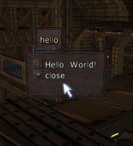

CHAPTER 3: GETTING MORE COMPLICATED
3.1 Your third zoom script (introducing “SLEEP”)
Your current zoom script should look like this:
zoom = [
if (= $zoomvar 1) [
fov 50
zoomvar = 0 //sets zoomvar to 0
]
if (= $zoomvar 0) [
fov 100
zoomvar = 1 //resets zoomvar to 1
]
]
Right now, all it does is zoom in, then out. I mentioned that rootnis’ script slowly(er) zooms in; how would you do that? Maybe
zoom = [
if (= $zoomvar 1) [
fov 90
fov 80
fov 70
fov 60
fov 50
zoomvar = 0
]
if (= $zoomvar 0) [
fov 100
zoomvar = 1
]
]
right? Wrong: Cube wants to execute the scipt as fast as possible. To you, it will seem as if the script zooms in just as fast as before. So what can possibly be done to slow it down? Sleep.
sleeper = [
echo Hello
sleep 1000 [
echo World
sleep 1000 [
echo !
]
]
]
“sleeper” echos the word “Hello” on the console, then “World” a second later, and finally “!” a second after that.
Note two things:
1. The structure of sleep commands. Each new sleep has to be embedded in the one before, as with any other commands: sleep X [sleep X [echo hi; sleep X [etc.]]]
2. Time in Cube is measure in milliseconds (ms). A ms is 1/1000 of a second, so one second is 1000 ms, a minute is 60000 ms, etc..
So how can you apply this to “zoom”? Sleeping for a fraction of a second before each fov change will zoom in (rather) smoothly. Try
zoom = [
if (= $zoomvar 1) [
fov 90
sleep 200 [
fov 80
sleep 200 [
fov 70
sleep 200 [
fov 60
sleep 200 [
fov 50
zoomvar = 0
]
]
]
]
if (= $zoomvar 0) [
fov 100 //or just reverse the process to smoothzoom out
zoomvar = 1
]
]
It’s a bit thrown-together, but also rather advanced for your third script. (We’ll keep doing more advanced zooms as you learn more terms and processes.)
3.2 GUIs, aka menus
newgui
guitext
guibutton
guitab
showgui
cleargui
guititle
guiimage
guicheckbox
guilist
guibar
guislider
guiradio
Those terms let you script Cube’s in-game menus. A simple menu that uses the first three (and “cleargui”) is
newgui hello [
guitext “Hello World!”
guibutton “close” “cleargui”
]
This creates a menu that looks like this:

and that closes when you click the text “close”.
To sum up, “newgui” is like “alias”. It creats a new menu with the title that comes after. “guitext” creats a new line of text, while “guibutton” creats a line of text that does “x” when you click it. Another basic element is a “guitab”. This allows you to put more information in your menu by using more than one “page”:
newgui hello [
guitext “Hello World!”
guibutton “close” “cleargui”
guitab “next page”
guitext “Hello again”
guibutton “main menu” “showgui menu”
]
(As you should be able to guess, “showgui” shows the specified menu, while “cleargui” hides the menu.) Now we want to give our menu (gui from now on) a title. “guititle” shows the specified name centered at the specified place on the list.
newgui “hello 2” [
guititle “The second Hello GUI”
guitext “Say hello to the world again...”
guibutton “click here” “say Hello World!; cleargui”
]
From the examples, you can see that you can script within the guibuttons’ actions. But you can also script in other parts of the gui, too, like the name, or the guitext:
newgui zoom [
guititle “Status of the script ‘zoom’”
guitext (format “zoomvar currently is %1” $zoomvar)
if (= $zoomvar 1) [
guitext “You are currently zoomed out.”
guibutton “Click here to zoom in now.” “zoom”
]
if (= $zoomvar 0) [
guitext “You are currently zoomed in.”
guibutton “Click here to zoom out now.” “zoom”
]
guibutton “Click here to close.” “cleargui”
]
Note the use of “%” to display the value of “zoomvar” in the guitext. After the text in quotes is a list of values or alias names, which will be displayed in their designated place (%1, %2, %3, etc.)
format “%1 bottles of %2 on the %3, %1 bottles of %2!” $bottlenum beer wall
You may use up to nine values like this (%1 through %9).